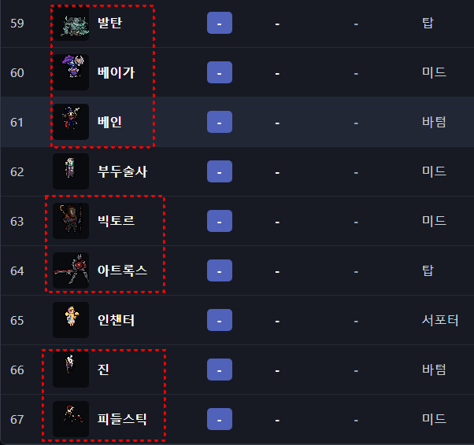
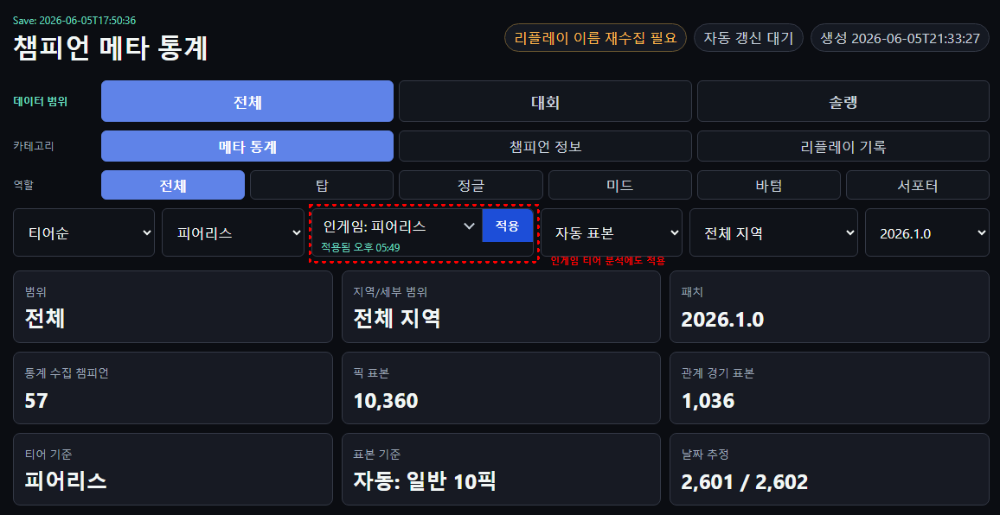

|
TFM2.gg UPDATE REPORT
[배포] TFM2.gg 챔프 모드 호환 업데이트
Teamfight Manager 2 0.4.10 대응
커스텀 챔피언 모드 호환, 인게임 메타 티어리스트 동기화, 피어리스 룰 연동을 중심으로 정리한 배포 안내글입니다.
|
|
안녕하세요. 이번 TFM2.gg 업데이트에는 커스텀 챔프 모드 호환과
인게임 티어리스트 호환 개선을 가져왔습니다.
기존에는 대시보드에서 보는 메타 티어와 인게임 티어 분류표가 완전히 맞지 않거나, 창작마당으로 추가한 챔피언이 대시보드에서 공백으로 보이는 문제가 있었습니다. 이번 업데이트는 그 부분을 중점적으로 다듬은 버전입니다. 아래에 변경점과 사용법을 같이 정리해두겠습니다. |
|
이번 업데이트 핵심 요약 - Teamfight Manager 2 0.4.10 대응 - Steam 창작마당 챔피언 추가 모드 감지 지원 - 설치 도구에서 챔피언 추가 모드를 모드 단위로 활성/비활성 가능 - 활성화된 모드 챔피언을 대시보드 목록에 자동 반영 - 모드 챔피언의 이름, 스킬, 능력치, 역할 추정, 스프라이트 표시 개선 - 대시보드 메타 티어를 인게임 S/A/B/C/D/No-Tier 티어표에 맞게 동기화 - 피어리스/하드 피어리스 기준도 인게임 티어 애드온에 적용 가능 |
|
01 · 챔피언 추가 모드 호환
창작마당으로 추가한 챔피언도 대시보드에 표시됩니다
이제 TFM2.gg가 Steam 창작마당의 챔피언 추가 모드를 감지합니다. 설치 도구에서 감지된 챔피언 모드를 켜고 끌 수 있고, 활성화된 모드의 챔피언은 대시보드 데이터 재생성 시 챔피언 목록에 함께 들어옵니다. 현재 테스트 기준으로는 창작마당 3735969373, 3738285693 모드를 감지했고, 총 7명의 외부 챔피언이 대시보드에 표시되는 것을 확인했습니다. |
|

첨부 이미지 1 · 대시보드에 추가된 커스텀 챔피언 예시입니다. 발탄, 베이가, 베인, 빅토르, 아트록스, 진, 피들스틱 등이 기본 챔피언 목록과 함께 표시됩니다.
|
|
02 · 모드 챔피언 표시 개선
이름, 스킬, 능력치, 스프라이트를 최대한 자동으로 읽습니다
창작마당 챔피언 모드는 기본 챔피언과 리소스 구조가 다를 수 있습니다. 그래서 이번 버전에서는 모드 폴더 안의 champion/*.data_champion, text/champion.i18n, sprite sheet, animation frame을 읽어 대시보드 표시용 데이터로 변환하도록 했습니다. 모드 챔피언은 통계가 아직 없으면 메타 티어가 -로 표시됩니다. 이건 오류가 아니라 정상 동작입니다. 실제 세이브와 리플레이에서 해당 챔피언의 경기 데이터가 쌓이면 기존 챔피언과 같은 기준으로 메타 스코어, 메타 티어, 꿀챔 점수가 계산됩니다. |
|
주의: 챔피언 모드는 개별 챔피언 단위가 아니라 창작마당 모드 단위로 켜고 끄는 방식입니다. 모드 내부 챔피언을 하나씩 뜯어서 켜고 끄면 스킬, 번역, 리소스 참조가 깨질 수 있어서, 안정성을 위해 모드 단위 관리로 잡았습니다. |
|
03 · 인게임 메타 티어 애드온 개선
대시보드 메타 티어가 인게임 티어 분류표에 맞게 들어갑니다
기존에는 대시보드에서 OP/1/2티어로 보이는 챔피언이 인게임 티어표에서는 C/D로 보이는 문제가 있었습니다. 원인은 인게임 쪽에서 raw 메타 스코어 숫자를 다시 S/A/B/C/D 컷으로 해석하는 구조였습니다. 이번 업데이트에서는 raw 메타 스코어를 그대로 넣지 않고, 대시보드가 최종 판단한 메타 티어를 게임 내부 티어 체계에 맞춰 변환합니다. 변환 기준은 아래와 같습니다. |
|
대시보드 OP → 인게임 S-Tier 대시보드 1티어 → 인게임 A-Tier 대시보드 2티어 → 인게임 B-Tier 대시보드 3티어 → 인게임 C-Tier 대시보드 4티어 → 인게임 D-Tier 대시보드 - → 인게임 No-Tier |
|

첨부 이미지 2 · 대시보드에서 인게임 티어 기준을 피어리스로 맞추고, 애드온 티어표 적용 버튼으로 인게임 정책을 생성하는 화면입니다.
|
|
04 · 피어리스 기준도 인게임 티어에 적용 가능
클래식만 고정되던 문제를 개선했습니다
피어리스나 하드 피어리스로 플레이하는 분들은 체감 메타가 클래식과 다를 수 있습니다. 좋은 챔피언이 반복 사용되지 못하거나, 강한 픽이 밴으로 묶이는 경우가 많기 때문입니다. 그래서 이번 업데이트에서는 대시보드의 룰 설정과 인게임 메타 티어 애드온 정책을 맞출 수 있게 했습니다. 대시보드에서 인게임: 피어리스 또는 인게임: 하드 피어리스를 선택하고 애드온 티어표 적용을 누르면 해당 기준으로 인게임 티어 정책이 다시 생성됩니다. |
|
인게임 메타 티어 정책 기준 - 기본 기준: 최신 패치 전세계 대회 통계 - 현재 예시 패치: 2026.1.0 - 지역: 전체 지역 - 역할: 전체 역할 - 룰: 클래식 / 피어리스 / 하드 피어리스 선택 가능 - 표본 부족 챔피언: No-Tier 처리 |
|
05 · 사용 방법
설치 후 아래 순서대로 사용하면 됩니다
1. 아래 다운로드 링크에서 ZIP을 받습니다. |
|
중요: 챔피언 추가 모드를 켜고 끄는 작업은 게임 실행 중에는 적용하지 않는 것을 권장합니다. 설치 도구도 게임 실행 중에는 변경을 막도록 되어 있습니다. 모드 상태를 바꾼 뒤에는 게임을 재시작하고, 대시보드 통계도 다시 갱신해 주세요. |
|
06 · 다운로드
GitHub Releases에서 받을 수 있습니다
GitHub Releases 페이지:
ZIP 직접 다운로드:
지원 게임 버전: |
|
자주 헷갈릴 수 있는 부분 Q. 챔피언 모드를 켰는데 대시보드에 바로 안 보여요. A. 게임 재시작과 대시보드 통계 재생성이 필요합니다. 이미 떠 있는 대시보드는 이전 meta-data를 보고 있을 수 있습니다. Q. 모드 챔피언이 - 티어로 보여요. A. 통계가 아직 없으면 정상입니다. 실제 경기 데이터가 쌓여야 메타 티어가 계산됩니다. Q. 인게임 티어표와 현재 대시보드 화면이 조금 달라요. A. 인게임 티어표는 기본적으로 최신 패치 전세계 대회 기준입니다. 대시보드에서 솔랭/지역/역할 필터를 보고 있다면 화면과 다를 수 있습니다. Q. 피어리스 기준으로 인게임 티어표를 넣을 수 있나요? A. 가능합니다. 대시보드에서 인게임 룰을 피어리스 또는 하드 피어리스로 맞춘 뒤 애드온 티어표 적용을 누르면 됩니다. |
|
07 · 피드백 부탁드립니다
모드 조합에 따라 차이가 있을 수 있습니다
챔피언 추가 모드는 제작자마다 파일 구조가 조금씩 다를 수 있습니다. 이름, 스킬 설명, 스프라이트, 모드 활성 상태가 정상적으로 잡히지 않는 경우가 있으면 사용 중인 창작마당 ID, 게임 버전, 설치 경로, 대시보드 로그를 함께 알려주시면 확인해보겠습니다. 특히 DLL이 포함된 모드나 champion_view style override가 있는 모드는 다른 모드와 충돌 가능성이 있을 수 있으니, 이상 동작이 있으면 어떤 모드를 같이 켰는지 알려주시면 도움이 됩니다. |
|
이번 업데이트의 핵심은
"내가 실제로 켜 둔 챔피언 모드 환경까지 TFM2.gg가 따라가게 만드는 것"입니다.
대시보드 분석, 인게임 티어표, 챔피언 추가 모드가 최대한 같은 기준으로 움직이도록 계속 다듬겠습니다.
|